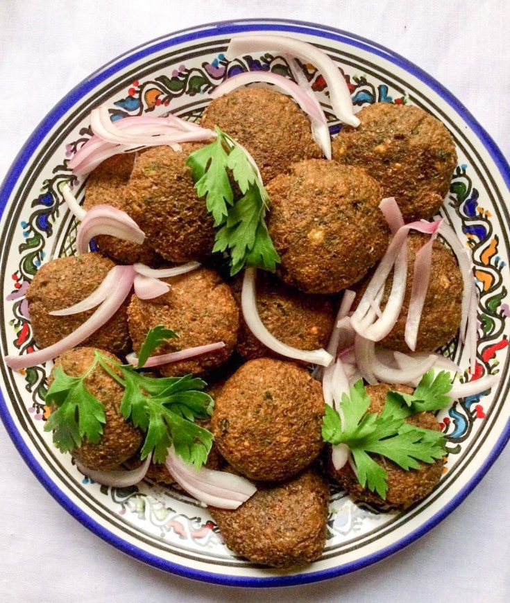

Falafel

Description
This Middle Eastern dish is made from chickpeas or fava beans and fried in oil.
It is a popular dish in Egypt, Palestine, Israel, and Lebanon. Commonly served in pita
bread or taboon, it goes great with hummus, tahini, tzatziki and salad vegetables.
Ingredients
- 1 15oz can of chickpeas
- 3 scallions
- 2 cloves of garlic
- 1/2 cup of parsley
- 1 large egg
- 1 lemon or 2 tablespoons of lemon juice
- 1 teaspoon baking powder
- 1 teaspoon cumin
- 1 teaspoon coriander
- 1 teaspoon cayenne or ground hot pepper of your choice
- 1/2 cup of all-purpose flour
- 2-3 tablespoons of olive oil
Steps
- Boil chickpeas until skins separate. Strain and add skinless chickpeas
to your food processor.
- Add herbs, egg, lemon juice, baking powder, and spices and pulse food processor
until mixture is evenly green, but not smooth.
- Refrigerate mixture for at least 30 minutes.
- Heat oil in frying pan, while rolling mixture into 1 inch balls and then into flour
until evenly coated.
- Fry for 3-4 minutes on each side until golden brown and serve with your choice of flatbread,
sauce, and veggies.
Return to recipe home